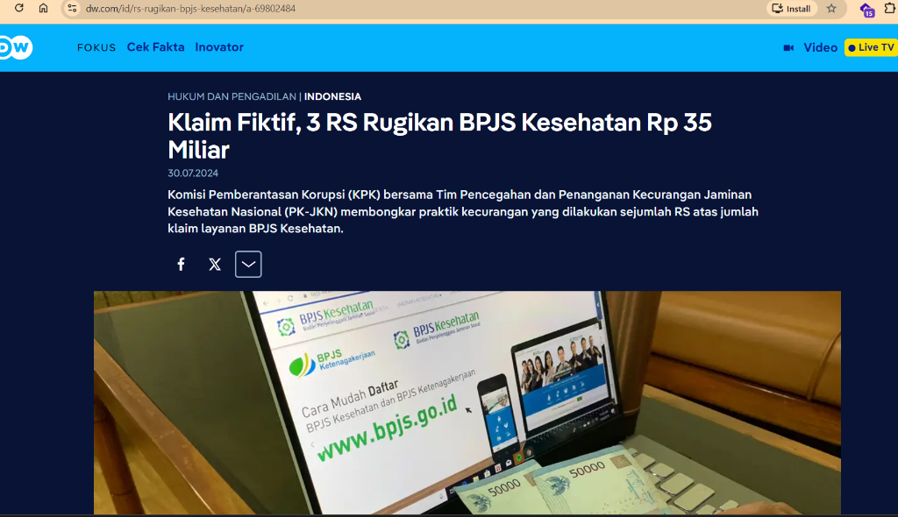

Fokus Modus: Manipulasi Diagnosis dan Prosedur (Upcoding), Fragmentasi Paket Klaim (Unbundling), dan Klaim Fiktif (Phantom Billing)
Audit retrospektif pasca-bayar membuat pengembalian dana klaim yang bocor sulit dilakukan. VeriKlaim memindahkan titik kendali ke tahap pra-bayar sebelum transaksi dicairkan.
Pemeriksaan klaim secara mendalam umumnya baru dilakukan berbulan-bulan setelah dana cair ke fasilitas kesehatan melalui audit BPKP atau investigasi KPK. Pada titik ini, kerugian keuangan negara sudah terjadi dan penarikan kembali dana memerlukan proses hukum yang panjang serta memicu friksi operasional antara BPJS dan rumah sakit mitra.
VeriKlaim melakukan pemindaian otomatis terhadap kesesuaian klinis rekam medis dan pola penagihan saat berkas klaim masuk di sistem V-Claim, dengan waktu komputasi di bawah 3 detik. Berkas yang tidak wajar langsung ditandai lengkap dengan rujukan pasal dan bukti diskrepansi klinis untuk diverifikasi oleh petugas verifikator BPJS.
Bukan sekadar aturan kaku (rule-based) yang mudah dihindari pelaku kecurangan, VeriKlaim menggabungkan pencocokan semantik teks resume medis dokter terhadap standar ICD-10 dengan pemodelan graf relasi transaksi faskes. Sistem ini berfungsi sebagai instrumen pendukung keputusan verifikator, bukan pemutus sepihak.
Tingginya volume klaim harian berbanding terbalik dengan keterbatasan jumlah petugas verifikator BPJS di seluruh kantor cabang.
Berkas klaim rumah sakit terdiri atas lembar resume medis, laporan tindakan operatif, instruksi dokter, dan hasil pemeriksaan laboratorium penunjang. Petugas verifikator non-medis sering kesulitan membaca ketidaksesuaian terselubung antara catatan perawat, riwayat lab, dan kode diagnosis utama yang diajukan oleh koder rumah sakit.
Jika proses verifikasi ditekan terlalu cepat demi menghindari keterlambatan pembayaran klaim, celah manipulasi diagnosis dan klaim fiktif berisiko lolos. Sebaliknya, bila audit manual diperketat pada setiap lembar dokumen, proses persetujuan klaim bagi rumah sakit yang tertib akan tertahan dan mengganggu arus kas pelayanan.
Kerugian akibat manipulasi klaim bukan sekadar asumsi teoretis, melainkan telah diverifikasi secara formal oleh penegak hukum dan instansi pengawas negara.

Investigasi gabungan KPK pada dua RS di Sumatera Utara dan satu RS di Jawa Tengah mengungkap manipulasi diagnosis dan tagihan fiktif ribuan sesi fisioterapi serta klaim katarak tanpa dokumen rekam medis yang sah.
Pemilihan tiga sub-kategori spesifik yang saling berkaitan langsung dalam siklus administrasi klaim INA-CBGs di fasilitas kesehatan.
Praktik menaikkan kode diagnosis atau tingkat keparahan penyakit secara tidak sah untuk mendapatkan nilai penggantian tarif INA-CBGs yang lebih tinggi.
Memecah rangkaian tindakan medis yang semestinya ditagihkan dalam satu paket tarif menjadi beberapa klaim terpisah pada tanggal yang berdekatan.
Pengajuan klaim atas tindakan medis, pemeriksaan diagnostik canggih, atau sesi terapi yang tidak pernah diberikan kepada pasien.
Solusi terpadu yang memadukan pemrosesan bahasa alami pada resume medis, matriks regulasi tarif, dan analisis graf hubungan transaksi.
Membaca dan memetakan teks narasi pada berkas resume medis (gejala, hasil observasi, laporan operasi, data lab kuantitatif) terhadap kriteria diagnostik klinis standar ICD-10. Jika diagnosis berat diklaim tanpa dukungan catatan klinis yang memadai, modul ini memicu bendera peringatan upcoding.
Mengevaluasi relasi temporal antar-prosedur yang ditagihkan dalam interval waktu tertentu. Memanfaatkan basis pengetahuan aturan pengelompokan INA-CBGs untuk mendeteksi tindakan yang seharusnya masuk dalam paket pelayanan yang sama.
Menganalisis hubungan antara rumah sakit, dokter penanggung jawab pelayanan (DPJP), jenis tindakan, dan pola frekuensi klaim. Berguna untuk mendeteksi klaster penagihan tidak wajar seperti lonjakan klaim massal untuk prosedur tertentu (phantom billing).
Sistem tidak hanya memberikan angka probabilitas risiko, tetapi menyajikan alasan klinis yang dapat langsung diuji kebenarannya oleh verifikator manusia.
Verifikator menerima ringkasan perbandingan data objektif tanpa harus membaca keseluruhan lembar rekam medis dari awal.
Alur kerja verifikasi dirancang untuk melengkapi sistem informasi yang telah beroperasi di BPJS Kesehatan.
Rumah sakit mengunggah berkas klaim digital dan resume medis melalui portal V-Claim BPJS sesuai tata cara yang berlaku.
Layanan API VeriKlaim memproses teks rekam medis, memeriksa matriks unbundling, dan menghitung skor risiko dalam 1.8 detik.
Klaim tanpa anomali diteruskan ke antrean pembayaran cepat. Klaim berisiko diarahkan ke dasbor investigasi petugas.
Verifikator BPJS meninjau bukti yang disorot, lalu menetapkan persetujuan, permintaan klarifikasi berkas, atau penolakan klaim.
Arsitektur modular yang memisahkan pembersihan data, inferensi analitik, dan penyajian antarmuka pengguna.
| Lapisan Sistem | Fungsi Teknis | Keluaran (Output) |
|---|---|---|
| 1. Penyerapan dan Sanitasi Data | Penerimaan berkas via REST API, ekstraksi teks dokumen resume medis, pemisahan elemen data pribadi (PII anonymization). | Data klinis terstruktur yang telah dide-identifikasi sesuai standar keamanan. |
| 2. Ekstraksi Entitas Klinis | Clinical Named Entity Recognition (NER) untuk mengidentifikasi gejala, obat, riwayat tindakan, dan nilai uji laboratorium. | Matriks fitur klinis numerik dan representasi vektor dokumen. |
| 3. Mesin Klasifikasi Anomali | Pencocokan semantik kesesuaian diagnosis (Medical NLP), model Gradient Boosting untuk anomali tarif, dan analisis keterhubungan graf. | Probabilitas anomali gabungan dan estimasi selisih biaya penagihan. |
| 4. Penyajian Keputusan (Service API) | Layanan mikro FastAPI yang menghasilkan respon JSON terstruktur ke dasbor verifikator BPJS Kesehatan. | Sorotan bukti teks klinis, rujukan kode diagnosis, dan rekomendasi status. |
Pengembangan solusi mematuhi larangan penggunaan data riil peserta JKN tanpa izin serta menerapkan prinsip privasi sejak perancangan.
Sesuai instruksi panitia Healthkathon, prototipe awal ini dikembangkan menggunakan data sintetis klinis yang meniru struktur resume medis dan transaksi klaim INA-CBGs. Tidak ada data pribadi peserta JKN nyata yang digunakan atau disimpan dalam server pengujian.
Pada perancangan lingkungan produksi, data identitas seperti NIK dan nomor kepesertaan dipisahkan dari riwayat klinis melalui mekanisme pseudonimisasi. Seluruh transmisi API dilindungi TLS 1.3 dan penyimpanan data terenkripsi standar AES-256.
Akses ke dasbor verifikasi dibatasi berdasarkan peran pengguna (Role-Based Access Control). Setiap tindakan verifikator dan histori keputusan audit tercatat dalam log audit yang tidak dapat diubah guna menjaga akuntabilitas proses.
Model telah diuji pada kumpulan data uji sintetis terstandar yang mereplikasi kasus klaim berisiko di rumah sakit.
Pengujian dilakukan pada skenario penyakit dalam, bedah umum, dan kardiovaskular. Model mampu mendeteksi ketiadaan bukti pendukung pada klaim dengan tingkat false positive di bawah 8.5%, menjaga agar klaim wajar tidak terganggu secara berlebihan.
Komponen API backend dan antarmuka penelaah berkas telah terhubung secara fungsional. Tim siap mendemonstrasikan proses pengunggahan berkas klaim, pemrosesan deteksi otomatis, dan penyajian bukti klinis secara langsung di hadapan dewan juri.
Rencana bertahap yang diselaraskan dengan jadwal resmi kegiatan BPJS Kesehatan Healthkathon 2026.
Penyusunan taksonomi kecurangan, pembuatan dataset sintetis 1.500 kasus, dan pelatihan model dasar NLP dan klasifikasi tabular.
Penyelarasan bobot anomali bersama mentor TI dan verifikator klinis BPJS Kesehatan serta penyempurnaan penjelasan XAI.
Pengujian beban throughput, integrasi simulasi API V-Claim, dan penguatan antarmuka keputusan pengguna.
Presentasi langsung kepada dewan juri serta perumusan kerangka uji coba percontohan pada kantor cabang terpilih.
Perhitungan efisiensi risiko yang seimbang bagi pengelola jaminan, fasilitas pelayanan kesehatan, dan peserta.
Pengendalian Kebocoran Dana: Penapisan dini berpotensi menekan kerugian akibat klaim anomali sebesar 2% hingga 3% dari total alokasi risiko faskes.
Efisiensi Jam Kerja: Memangkas waktu telaah dokumen manual verifikator hingga 60%, memungkinkan petugas memprioritaskan investigasi kasus kompleks.
Kepastian Pembayaran: Berkas klaim rumah sakit yang tertib lolos verifikasi secara cepat tanpa tertahan antrean manual yang panjang.
Mitigasi Risiko Hukum: Menjadi tolok ukur audit mandiri bagi tim koder RS untuk meminimalkan kekeliruan administrasi sebelum diajukan.
Keberlanjutan Program: Dana amanat jaminan sosial terlindungi untuk membiayai perawatan pasien yang benar-benar membutuhkan.
Kualitas Asuhan: Mengurangi dorongan tindakan medis berlebihan yang tidak sesuai indikasi klinis murni.
Menempatkan kecerdasan analitik sebagai alat bantu telaah yang bertanggung jawab, transparan, dan dapat diaudit.
Sistem tidak memiliki kewenangan membatalkan atau menolak pembayaran klaim secara mandiri. Keputusan akhir sepenuhnya berada di tangan verifikator manusia setelah memeriksa bukti klinis yang ditampilkan.
Model mempertimbangkan ketersediaan fasilitas penunjang di rumah sakit daerah terpencil (RS Kelas C/D) agar tidak salah menilai ketiadaan alat diagnostik canggih sebagai bentuk kelalaian atau manipulasi berkas.
Parameter tarif dan batasan kode klinis dipisahkan dalam modul konfigurasi regulasi. Jika Kementerian Kesehatan menerbitkan pembaruan aturan INA-CBGs, parameter dapat diperbarui tanpa harus melatih ulang seluruh model.
Kombinasi keahlian analitik data klinis, rekayasa backend berlatensi rendah, serta pemahaman alur bisnis klaim kesehatan.
Pakar kecerdasan buatan dan sistem pendukung keputusan lulusan S1 dan S2 STEI ITB. Penulis buku Eksplorasi Machine Learning dengan Scikit-Learn (2024), periset pemodelan prediktif kesehatan (Machine Learning Diabetes), serta ketua/peneliti program riset AI Kemendiktisaintek dan LPDP. Bertanggung jawab atas arsitektur model NLP klinis dan deteksi anomali graf.
Peneliti sistem cerdas dan mantan Project Manager di PPTIK ITB & PT LSKK dengan pengalaman riset Smart Healthcare System, arsitektur cloud backend, microservices, pipeline throughput tinggi, serta pemenuhan standar enkripsi dan privasi data (UU PDP).
Peneliti manajemen keperawatan dan sistem pelayanan rumah sakit di Universitas Tanjungpura. Memiliki rekam jejak riset dalam pengembangan aplikasi Early Warning System di RS Universitas Tanjungpura, analisis beban kerja asuhan keperawatan rawat inap, serta evaluasi alur rekam medis pasien guna memvalidasi logika kepatuhan klaim INA-CBGs dan perancangan antarmuka verifikator BPJS.
Tim menyatakan kesiapan mengikuti seluruh rangkaian kegiatan kompetisi secara hybrid: mulai dari sesi pembekalan webinar, pendampingan teknis coaching, hackathon onsite, hingga presentasi Demo Day Grand Final di hadapan dewan juri BPJS Kesehatan dan Kementerian Kesehatan.